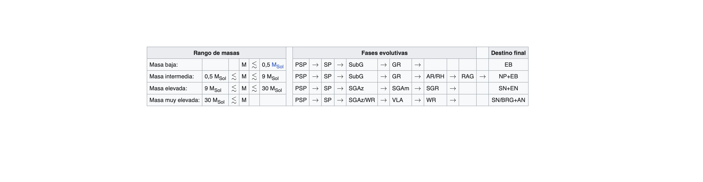

Secuencia Principal
Se llama secuencia principal a la fase en que la estrella quema hidrógeno en su núcleo mediante fusión nuclear. Aquí la estructura de la estrella consta esencialmente de un núcleo donde tiene lugar la fusión del hidrógeno al helio, y una envoltura que transmite la energía generada hacia la superficie. La mayor parte de las estrellas pasan el 90% de su vida, aproximadamente, en la secuencia principal del diagrama de Hertzsprung-Russell. En esta fase las estrellas consumen su combustible nuclear de manera gradual pudiendo permanecer estables por períodos de 2-3 millones de años, en el caso de las estrellas más masivas y calientes, a miles de millones de años si se trata de estrellas de tamaño medio como el Sol, o hasta decenas o incluso centenares de miles de millones de años en el caso de estrellas de poca masa como las enanas rojas. Lentamente, la cantidad de hidrógeno disponible en el núcleo disminuye, con lo que este ha de contraerse para aumentar su temperatura y poder detener su colapso gravitacional. Las temperaturas del núcleo estelar más elevadas permiten fusionar, progresivamente, nuevas capas de hidrógeno sin procesar. Por este motivo las estrellas aumentan su luminosidad durante la etapa de secuencia principal de forma paulatina y regular.
Imagenes de la secuencia principal:
Una estrella de metalicidad solar, baja velocidad de rotación y sin compañeras cercanas, atraviesa las siguientes fases, conforme a su masa inicial:
